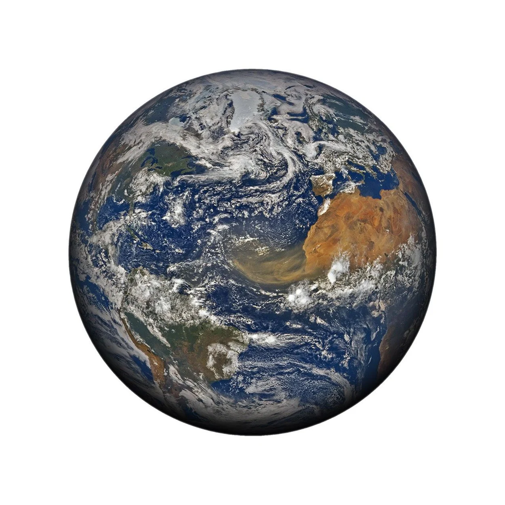
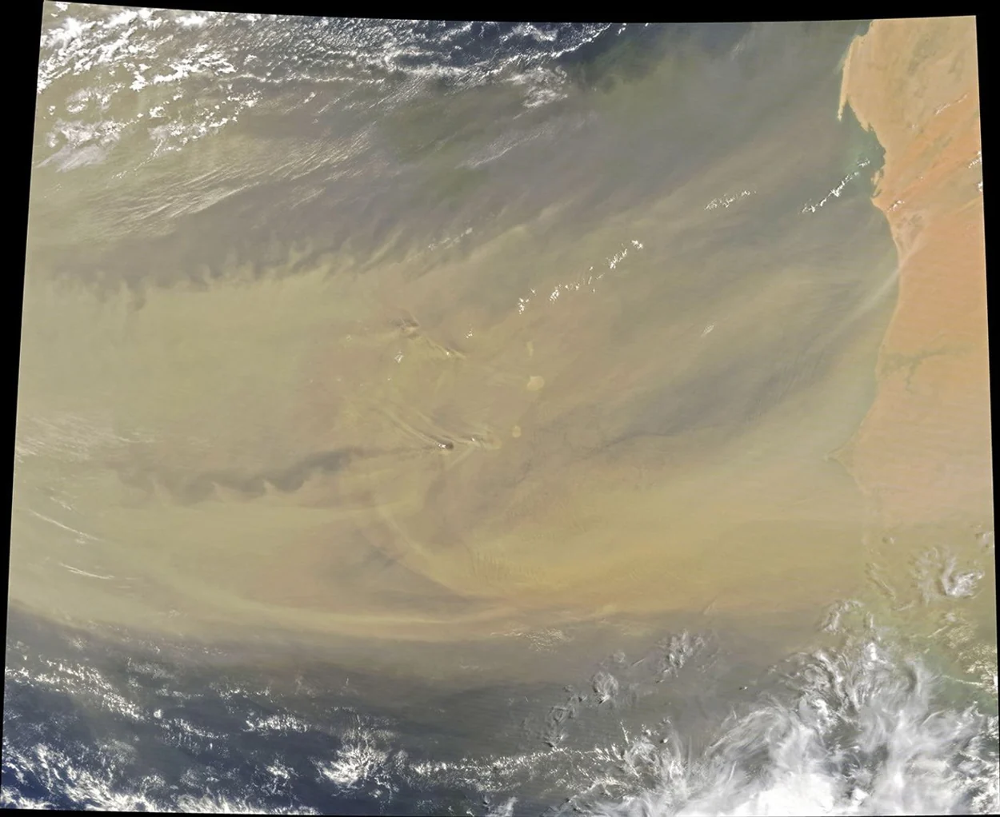

Detect
Which pixels are likely to contain dust?
Visual Perception / Project proposal
Can we follow a dust plume from satellite images?
Morel Liantsoa Malick

01 / The question

The dust plume is visible.
Its edge is fuzzy.
The tan haze fades gradually. Bright clouds and wakes around the islands complicate the picture.
Which part of the changed shape belongs to the same plume?
01 / The question
Which pixels are likely to contain dust?
How much ground area does the detected plume cover?
How does the plume’s position change across frames?
One week · One episode · Western Sahara and adjacent West Africa
The broader motivation came from Harmattan dust. The class project follows one Saharan dust episode. [click] Detection means a pixel mask. [click] For area, sum georeferenced pixel areas or use an equal-area grid. [click] Tracking is association across observed timestamps. Forecasting is an extension.02 / Detect
Meteosat Dust RGB combines infrared channels so dust often appears pink or magenta.
Start with an interpretable color rule. Compare its mask with hand-traced plume boundaries.
Clouds can hide dust. Thin dust can be hard to see, especially over water.
02 / Detect · interactive simulation
—
A low cutoff can pick up background. A high cutoff can lose the plume’s thin edges.
Move the slider low, then high. The synthetic scene includes a small pink distractor to show why a color rule can fail. The score here is min(red, blue) minus green, evaluated over synthetic pixels. The number is mask coverage of the image. For the real project, estimate area using georeferenced pixels.03 / Track · interactive simulation
Match nearby masks across frames and follow their centers.
Start of the simulated sequence.
03 / Track
Same region and projection across timestamps.
Estimate the footprint in km² on an equal-area grid.
Map the centroid positions and flag gaps or splits.
The footprint is an area estimate. Dust concentration would require additional data.
Choose a sequence with consistent spatial coverage. [click] Compute footprint area using an equal-area grid, and keep the mask so results can be inspected. [click] Associate detections across time. [click] Dust RGB alone does not yield dust concentration or ground-level PM2.5. Those are separate targets.04 / Validate
Trace visible dust on representative frames and flag ambiguous boundaries.
Tune the rule on earlier frames. Report mask IoU and show false positives and misses on held-out frames.
Compare the automated track with hand-marked plume centers. Report typical location error and show any gaps.
IoU is the area shared by two masks divided by the area covered by either mask.
A few hand annotations are feasible for a one-week project. [click] Chronological separation reduces near-duplicate leakage, but evaluation within one event is still a within-event check. [click] Show cases where the track breaks instead of joining gaps without evidence.04 / Validate
Pick a visible event, align the sequence and annotate a subset.
Segment dust, calculate footprint area and link masks across time.
Produce a short replay with a track, area estimates and failure examples.
If tracking is reliable, try a short wind-assisted forecast as a separate experiment.
The core deliverable is a replay of one observed episode with its masks and track. [click] A forecast is a separate experiment. It needs a later frame for validation and would only be attempted if time permits.Discussion
A plume can stretch, split, or pass behind a cloud. How should the tracker handle each case?
Satellite imagery · Joshua Stevens, NASA Earth Observatory, using DSCOVR EPIC and Terra MODIS data. View source
Proposed data · EUMETSAT Dust RGB and EUMeTrain Quick Guides.